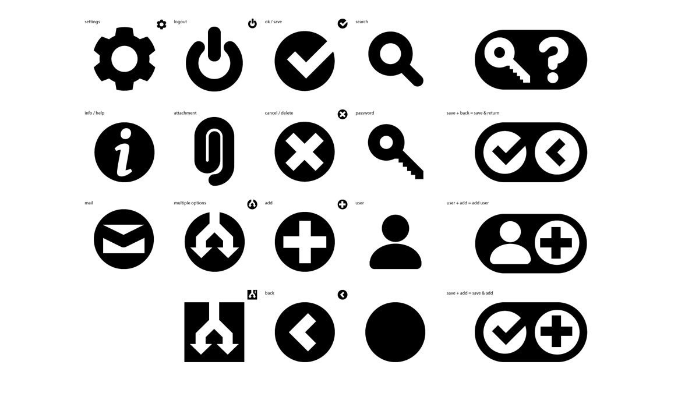
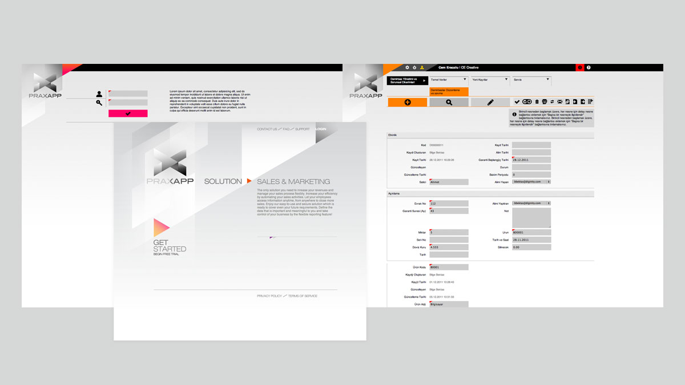

Praxapp
2012 UX ID"practical application platform" is a cloud based exclusive data services. Volumetric logo mark is especially designed to take the advantage of digital medium. A sacrifice was made on color to improve / help the usability and user experience in interface. Used only in gray scale to help the web interface where the colors are coded for different applications and user actions. The main idea for the interface was not to use any language for the navigation and user actions but make the whole site universally accessible by visual language.

